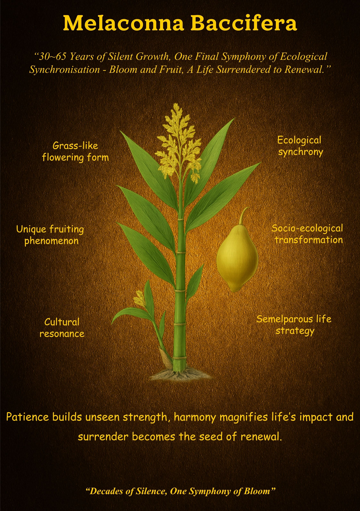
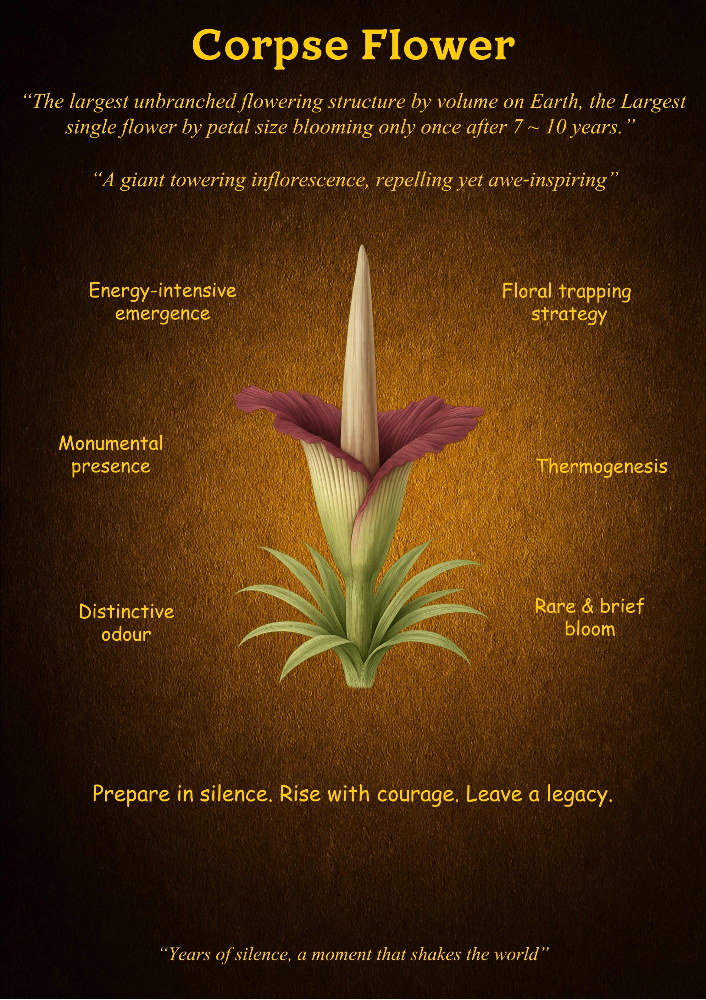

THE BRAHMA KAMAL

THE SIKKIM SUNDARI

THE NEELAJURINJI

THE TALIPOT PALM

THE MELACONNA BACCIFERA

THE QUEEN OF THE NIGHT

THE MIDDLEMIST RED

THE GHOST ORCHID

THE PUYA RAIMOONDI

THE BLUE PUYA

THE AGAVE AMERICANA

This collection was born from an extensive exploration of rare blooms found throughout the digital world. While most observations of these plants praise them for their aesthetic beauty or the unique timing of their blooms, the intention here is to go one step ahead.
By looking deeper, we can begin to understand the foundational, foolproof systems and principles governing their survival. In an era where the modern world struggles to cope with the pace of existence, nature quietly exhibits the essential systems required for growth.
"Flowers do not speak; they exhibit."
The posters and articles in this gallery represent a fusion of botanical science and Stoic philosophy. They are the outcome of a deep study intended to extract the underlying wisdom inherited within these rare life forms. Stunned by growth patterns that range from a single year to an entire century, we move beyond simple observation.
The Key: To see, but deeply see, to understand the hidden principles that responsibly govern us.


Driven by a deep reverence for the natural world and the power of minimalist design, the curator seeks to distill complex life philosophies into visual and written meditations. These extracted values are a labour of intention—a quiet corner of the internet built for those who seek strength in stillness.